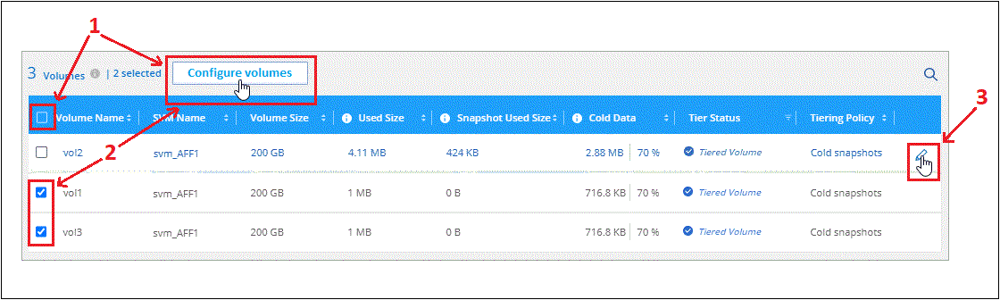

문서 변경 요청
문서 변경 요청 이 페이지 편집
이 페이지 편집 기여하는 방법 자세히 알아보기
기여하는 방법 자세히 알아보기사내 ONTAP 클러스터에서 S3 오브젝트 스토리지로 데이터 계층화
S3(Simple Storage Service) 프로토콜을 사용하는 오브젝트 스토리지 서비스에 비활성 데이터를 계층화하여 온프레미스 ONTAP 클러스터의 여유 공간을 확보합니다.

|
클라우드 계층으로 공식적으로 지원되지 않는 오브젝트 저장소를 사용하려는 고객은 이러한 지침을 사용할 수 있습니다. 고객은 오브젝트 저장소가 요구사항을 충족하는지 테스트하고 확인해야 합니다. NetApp은 특히 제품이 출시된 제3자와의 지원 계약에 동의하지 않은 타사 오브젝트 저장소 서비스에서 발생하는 모든 문제에 대해 책임을 지지 않습니다. NetApp은 관련된 모든 손상에 대해 책임을 지지 않으며 해당 타사 제품에 대한 지원을 제공해야 한다는 점을 인정하고 이에 동의합니다. |
빠른 시작
다음 단계를 따라 빠르게 시작하거나 나머지 섹션을 아래로 스크롤하여 자세한 내용을 확인하십시오.
다음이 필요합니다.
-
ONTAP 9.8 이상을 실행하는 온프레미스 ONTAP 클러스터 및 S3 호환 오브젝트 스토리지에 대한 사용자 지정 포트를 통한 연결. "클러스터를 검색하는 방법에 대해 알아보십시오".
-
ONTAP 클러스터가 버킷에 액세스할 수 있도록 객체 스토리지 서버의 FQDN, 액세스 키 및 암호 키.
-
구내에 설치된 커넥터.
-
ONTAP 클러스터에 대한 아웃바운드 HTTPS 연결, S3 호환 오브젝트 스토리지 및 Cloud Tiering 서비스를 지원하는 커넥터용 네트워킹.
Cloud Manager에서 사내 작업 환경을 선택하고, 계층화 서비스에 대해 * Enable * 을 클릭하고, 표시되는 메시지에 따라 데이터를 S3 호환 오브젝트 스토리지에 계층화합니다.
클라우드 공급자의 용량제 구독, NetApp Cloud Tiering Bring-Your-Own-License 또는 두 가지를 결합하여 사용한 클라우드 계층화 비용 지불:
-
에서 Cloud Manager PAYGO 오퍼링을 구독하려면 "AWS 마켓플레이스 를 참조하십시오", "Azure 마켓플레이스 를 참조하십시오", 또는 "GCP 마켓플레이스"를 클릭하고 * 가입 * 을 클릭한 다음 화면의 지시를 따릅니다.
-
Cloud Tiering BYOL 라이센스를 사용하여 비용을 지불하려면 mailto:ng-cloud-tiering@netapp.com?subject=Licensing [구매해야 하는 경우 문의하기]를 참조하십시오 "Cloud Manager Digital Wallet에서 계정에 추가하십시오".
요구 사항
ONTAP 클러스터에 대한 지원을 확인하고, 네트워킹을 설정하고, 오브젝트 스토리지를 준비합니다.
다음 이미지는 각 구성 요소와 이러한 구성 요소 간에 준비해야 하는 연결을 보여 줍니다.


|
Connector와 S3 호환 오브젝트 스토리지 서버 간의 통신은 오브젝트 스토리지 설정만을 위한 것입니다. |
ONTAP 클러스터 준비
데이터를 S3 호환 오브젝트 스토리지로 계층화할 때 ONTAP 클러스터는 다음 요구사항을 충족해야 합니다.
- 지원되는 ONTAP 플랫폼
-
AFF 시스템 또는 FAS 시스템에서 All-SSD 애그리게이트 또는 All-HDD 애그리게이트로 데이터를 계층화할 수 있습니다.
- 지원되는 ONTAP 버전입니다
-
ONTAP 9.8 이상
- 클러스터 네트워킹 요구 사항
-
-
ONTAP 클러스터는 사용자가 지정한 포트를 통해 S3 호환 오브젝트 스토리지에 대한 HTTPS 연결을 시작합니다(계층화 설정 중에 포트 구성 가능).
ONTAP는 오브젝트 스토리지 간에 데이터를 읽고 씁니다. 오브젝트 스토리지는 한 번도 시작되고, 응답 하기만 합니다.
-
Connector에서 인바운드 연결이 필요하며, 이는 구내에 상주해야 합니다.
클러스터와 Cloud Tiering 서비스를 연결할 필요가 없습니다.
-
계층화할 볼륨을 호스팅하는 각 ONTAP 노드에 인터클러스터 LIF가 필요합니다. LIF는 ONTAP가 오브젝트 스토리지에 연결하는 데 사용해야 하는 _IPspace_와 연결되어 있어야 합니다.
-
- 지원되는 볼륨 및 애그리게이트
-
Cloud Tiering이 계층화할 수 있는 총 볼륨 수가 ONTAP 시스템의 볼륨 수보다 적을 수 있습니다. 이는 볼륨을 일부 애그리게이트로 계층화할 수 없기 때문입니다. 에 대한 ONTAP 설명서를 참조하십시오 "FabricPool에서 지원하지 않는 기능 또는 기능입니다".

|
Cloud Tiering은 FlexVol 볼륨과 FlexGroup 볼륨을 모두 지원합니다. |
ONTAP 클러스터 검색
콜드 데이터 계층화를 시작하려면 Cloud Manager Canvas에서 온프레미스 ONTAP 작업 환경을 만들어야 합니다.
S3 호환 오브젝트 스토리지 준비
S3 호환 오브젝트 스토리지는 다음 요구사항을 충족해야 합니다.
- S3 자격 증명
-
S3 호환 오브젝트 스토리지로 계층화를 설정할 경우 S3 버킷을 생성하거나 기존 S3 버킷을 선택하라는 메시지가 표시됩니다. Cloud Tiering에 S3 액세스 키와 암호 키를 제공해야 합니다. Cloud Tiering은 키를 사용하여 버킷에 액세스합니다.
이러한 액세스 키는 다음 권한을 가진 사용자와 연결되어야 합니다.
"s3:ListAllMyBuckets", "s3:ListBucket", "s3:GetObject", "s3:PutObject", "s3:DeleteObject", "s3:CreateBucket"
커넥터 작성 또는 전환
데이터를 클라우드에 계층화하려면 Connector가 필요합니다. 데이터를 S3 호환 오브젝트 스토리지로 계층화할 경우 Connector를 사내에서 사용할 수 있어야 합니다. 새 커넥터를 설치하거나 현재 선택한 커넥터가 내부에 있는지 확인해야 합니다.
커넥터를 위한 네트워킹 준비
커넥터에 필요한 네트워크 연결이 있는지 확인합니다.
-
커넥터가 설치된 네트워크에서 다음 연결을 사용할 수 있는지 확인합니다.
-
포트 443(HTTPS)을 통해 Cloud Tiering 서비스에 대한 아웃바운드 인터넷 연결
-
포트 443을 통해 S3 호환 오브젝트 스토리지에 HTTPS 연결
-
포트 443을 통해 ONTAP 클러스터 관리 LIF에 HTTPS로 연결합니다
-
첫 번째 클러스터에서 S3 호환 오브젝트 스토리지로 비활성 데이터 계층화
환경을 준비한 후 첫 번째 클러스터에서 비활성 데이터의 계층화를 시작합니다.
-
S3 호환 오브젝트 스토리지 서버의 FQDN과 HTTPS 통신에 사용될 포트.
-
필요한 S3 권한이 있는 액세스 키 및 비밀 키.
-
온프레미스 클러스터를 선택합니다.
-
오른쪽 패널에서 계층화 서비스에 대해 * Enable * 을 클릭합니다.

-
* 제공업체 선택 *: * S3 호환 * 을 선택하고 * 계속 * 을 클릭합니다.
-
Tiering Setup * 페이지의 단계를 완료합니다.
-
* 서버 *: S3 호환 오브젝트 스토리지 서버의 FQDN, ONTAP이 서버와 HTTPS 통신에 사용해야 하는 포트, 필요한 S3 권한이 있는 계정의 액세스 키 및 암호 키를 입력합니다.
-
* 버킷 *: 새 버킷을 추가하거나 기존 버킷을 선택하고 * 계속 * 을 클릭합니다.
-
* 클러스터 네트워크 *: ONTAP가 오브젝트 스토리지에 연결하는 데 사용해야 하는 IPspace를 선택하고 * 계속 * 을 클릭합니다.
올바른 IPspace를 선택하면 클라우드 계층화를 통해 ONTAP에서 S3 호환 오브젝트 스토리지로의 연결을 설정할 수 있습니다.
-
-
성공_페이지에서 지금 볼륨을 설정하려면 * 계속 * 을 클릭합니다.
-
Tier Volumes_ 페이지에서 계층화를 구성할 볼륨을 선택하고 * Continue * 를 클릭합니다.
-
모든 볼륨을 선택하려면 제목 행(
 )를 클릭하고 * 볼륨 구성 * 을 클릭합니다.
)를 클릭하고 * 볼륨 구성 * 을 클릭합니다. -
여러 볼륨을 선택하려면 각 볼륨에 대한 확인란을 선택합니다(
 )를 클릭하고 * 볼륨 구성 * 을 클릭합니다.
)를 클릭하고 * 볼륨 구성 * 을 클릭합니다. -
단일 볼륨을 선택하려면 행(또는)을 클릭합니다
 아이콘)을 클릭합니다.
아이콘)을 클릭합니다.
-
-
Tiering Policy_대화 상자에서 계층화 정책을 선택하고 선택한 볼륨의 냉각 날짜를 필요에 따라 조정한 다음 * Apply * 를 클릭합니다.

클러스터의 볼륨에서 S3 호환 오브젝트 스토리지로 데이터 계층화를 성공적으로 설정했습니다.
클러스터에 클러스터를 추가하거나 활성 데이터와 비활성 데이터에 대한 정보를 검토할 수 있습니다. 자세한 내용은 을 참조하십시오 "클러스터에서 데이터 계층화 관리".